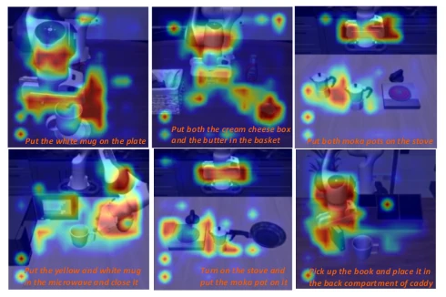
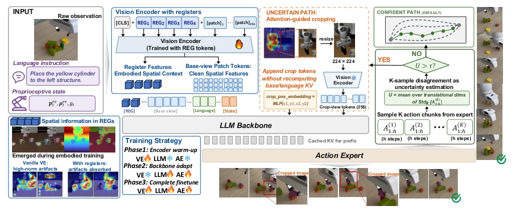
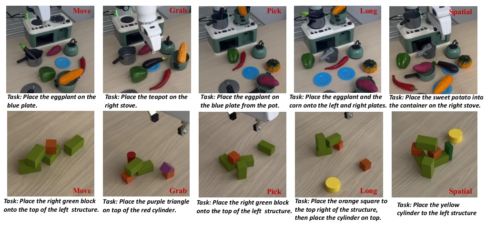
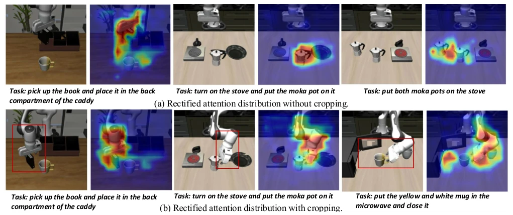
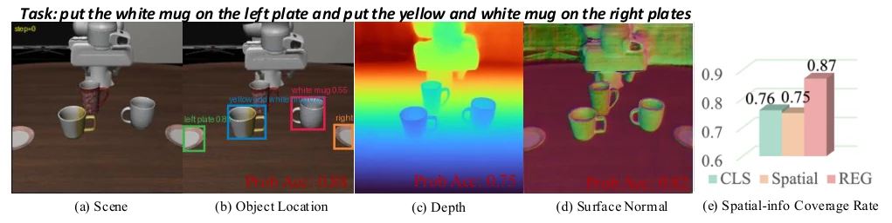
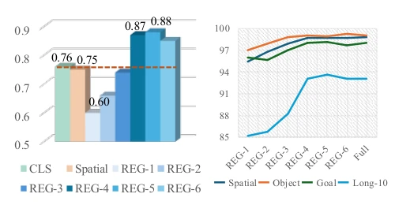
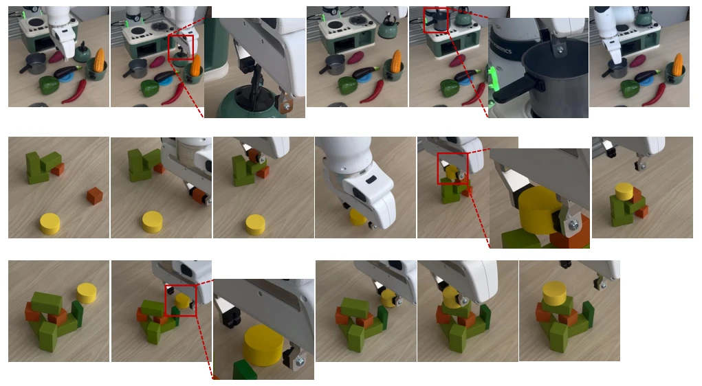

This paper conducts a "major cleanup" for VLA models. The authors discovered that existing VLA models (such as π0) cause issues within the visual encoder, where background patches seize storage space for global information, resulting in dispersed attention and robots failing to see clearly. AtVLA adds several register tokens to shoulder the burden, storing spatial information within them, allowing patches to return to purity. More notably, it implements a "zoom in when uncertain" mechanism; if action prediction is unstable, it crops the image and re-encodes. Although the results are indeed impressive, with improvements in both LIBERO and real-world robots, computation increased by 1.5 times; does this count as sacrificing real-time performance for accuracy? However, for fine manipulation, this cost is well worth it. Furthermore, this method relies entirely on embodied data fine-tuning, without introducing additional visual pre-training, which is very pragmatic. However, relying on attention map cropping, if the attention itself is inaccurate, the cropping will backfire, which constitutes a potential hazard. Overall, this is a clever "minimally invasive surgery" on the existing architecture, both patching vulnerabilities and avoiding a complete overhaul.
研究动机Motivation
动机很明确：VLA 模型虽然语义强，但空间感知拉胯。作者指出 VLA 视觉编码器存在注意力伪影（attention artifacts），背景 patch 被复用为全局信息存储库，挤占了局部空间内容（Darcet et al. 2023）。在具身微调后，这种病态更严重，因为编码器要学物体位置、深度等，但全局 token 容量有限，导致信息溢出到 patch tokens 中。此外，低分辨率观测丢失了几何细节，而腕部相机视角变化大。现有方法要么依赖外部视觉专家，要么引入复杂 3D 表示，AtVLA 想通过内部注意力引导的自适应裁剪来解决。这直击了 VLA 在精细操作中的痛点，即语义理解到位了，但空间定位还是靠猜。
The motivation is clear: although VLA models have strong semantics, their spatial perception is inferior. The authors point out that VLA visual encoders suffer from attention artifacts (attention artifacts), where background patches are reused as global information repositories, crowding out local spatial content (Darcet et al. 2023). After embodied fine-tuning, this pathology becomes more severe, because the encoder must learn object positions, depth, etc., but global token capacity is limited, causing information to overflow into patch tokens. Additionally, low-resolution observations lose geometric details, while wrist camera view changes are significant. Existing methods either rely on external visual experts or introduce complex 3D representations; AtVLA aims to solve this through internal attention-guided adaptive cropping. This directly addresses the pain point of VLA in fine manipulation, where semantic understanding is adequate, but spatial positioning still relies on guessing.

Figure 1: Attention artifacts in a standard VLA visual en- coder. High-norm regions emerge in low-information back- grounds or unrelated objects, corrupting the spatial ground- ing of task-relevant targets and interaction regions.
The overall framework proceeds in three steps. First is the Register-Enhanced Visual Prefix, where 4 learnable register embeddings are inserted after the SigLIP encoder Class token to absorb global information, releasing patch tokens for spatial localization. These register features are projected and input as global context to the LLM. Second is Uncertainty-Gated Action Prediction, where the action expert samples K action chunks, estimating uncertainty via divergence along the translation dimension. If uncertainty is low, execute directly; if high, enter the cropping process. Finally is Attention-Guided Local Refinement, utilizing action-to-image attention maps to locate task-relevant regions, cropping and re-encoding into high-resolution patches, which are appended to the cached prefix. Training is divided into three phases: first adapting the register, then aligning the ground-truth crop, and finally jointly optimizing action and attention. In the joint optimization phase, an attention supervision loss is introduced to ensure the cropped regions are task-relevant.

Figure 2: Overview of AtVLA. Register tokens absorb excess global information and retain embodied spatial context while restoring clean patch representations. The action expert estimates uncertainty from multiple sampled action chunks: confident predictions follow the base path, whereas uncertain predictions trigger attention-guided cropping, high-resolution re-encoding, and prefix extension. A three-stage curriculum progressively aligns the registers, crop branch, and complete policy.
Tested on LIBERO, SimplerEnv, and real-world benchmarks. Compared to π0, AtVLA improved the average success rate on LIBERO from 94.2% to 98.4%, and on the real-world from 46.5% to 69.0%. Ablation studies show that adding only the register improves spatial reasoning, adding only cropping is effective for long-horizon tasks, and combining both is optimal. Linear probing confirms that the register encodes the richest spatial information. Regarding computational overhead, triggering cropping occurs in approximately 30% of steps, with total computation increasing by 1.4-1.6 times. Additionally, in complex scenes such as Kitchen and Building Blocks, AtVLA demonstrated stronger robustness, particularly in small object stacking and fine grasping tasks.

Figure 3: Real-world evaluation benchmark. The Kitchen suite (top) evaluates visual grounding and reasoning in cluttered household scenes, while Building Blocks (bottom) tests small-object stacking, spatial relations, and long-horizon construction.

Figure 4: Qualitative effects of attention rectification and adaptive visual refinement. (a) Register-enhanced encoding pro- duces clean attention aligned with task-relevant objects. (b) When uncertainty triggers refinement, attention rollout selects the interaction-critical region, whose high-resolution re-encoding sharpens perception around the target and contact area.

Figure 5: Probing embodied spatial information in visual tokens. Independent linear probes predict object location, depth, and surface normals from the CLS token, mean-pooled patch tokens, or register tokens; bars report normalized held-out scores. Register features consistently retain the richest task-relevant spatial information.

Figure 6: Effect of register-token capacity. Left: probe scores for the CLS token, patch tokens, and different numbers of registers. Right: success rates in LIBERO suites.

Figure 7: Additional real-world demonstrations of AtVLA. Each row presents a temporally ordered manipulation rollout.